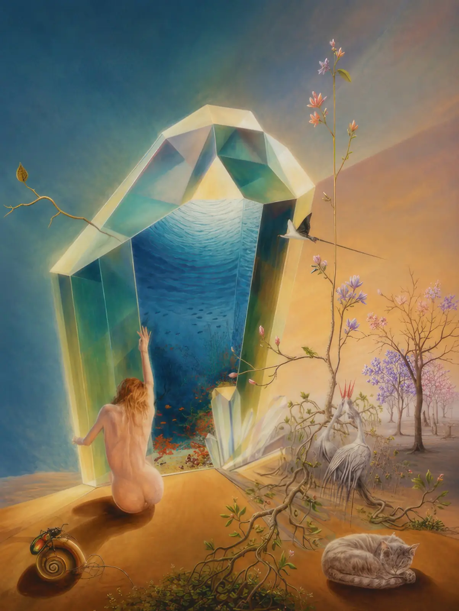
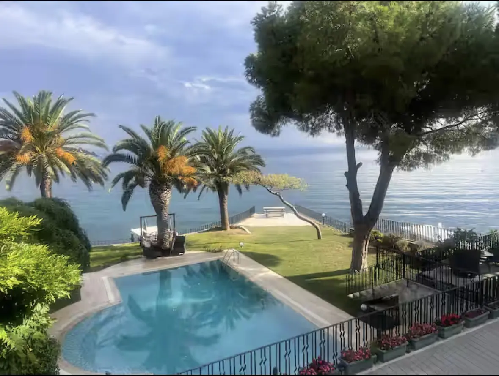
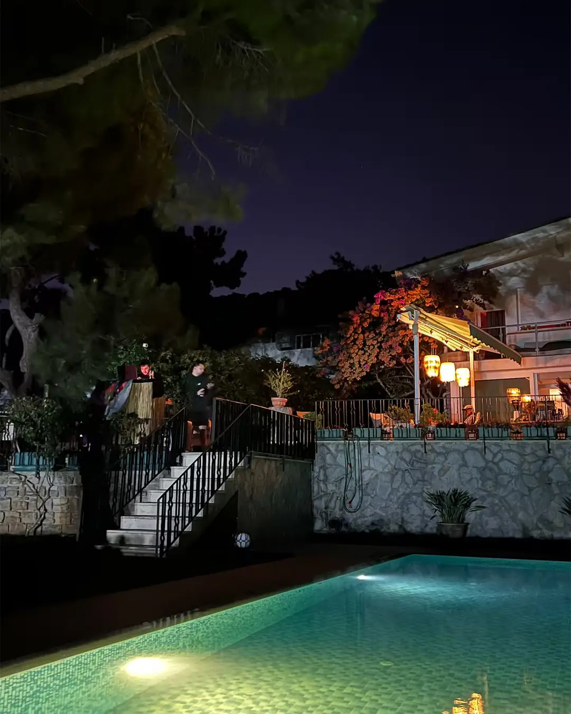
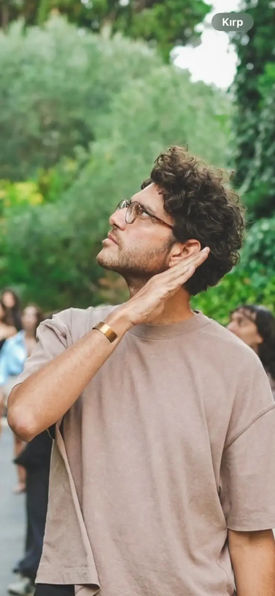
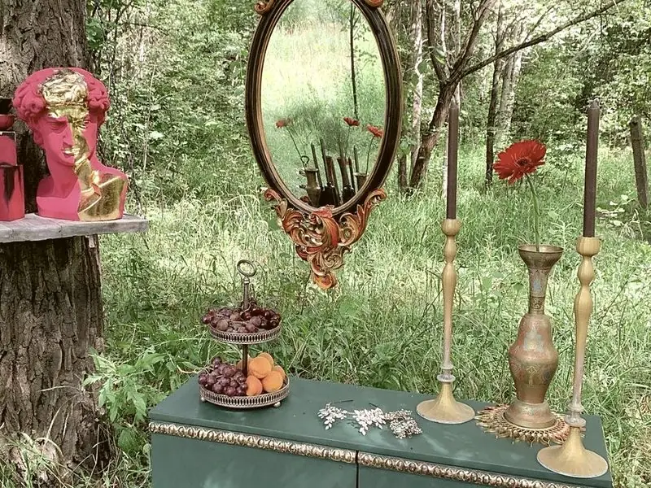

Başlıyoruz
Özel tekne 12:30’da Karaköy’den, 13:00’te Kadıköy’den hareket ediyor. Şehir arkamızda kalırken ilk set başlıyor; doğrudan evin iskelesine yanaşıyoruz.

Elli kişi, Büyükada’da denize açılan bir ev ve öğleden gece yarısına uzanan bir gün: atölyeler, havuz, müzik, yemek ve deniz yolculuğu.
Bu, sahne karşısında beklediğin bir festival değil. Bir atölyeye oturabilir, yarısında kalkıp havuza girebilir, tanımadığın biriyle resme başlayabilir ya da arka bahçede biraz sessiz kalabilirsin. Her şeyi yetiştirmeye çalışma. Merak ettiğin yerden gir.
Bir şey yap, dene, ses çıkar, elini boyaya bulaştır.
Aynı tekneye bin, yeni bir sohbete yer aç.
Günün programı var; zorunlu bir rota yok.
Büyükada’daki villanın kapısı o gün yalnızca bize açık. Tekne evin iskelesine yanaşıyor; birkaç adım sonra çamların altındaki havuza, taş kayıkhaneye ve denize bakan bahçeye çıkıyorsun.
Atölyeler evin farklı köşelerine yayılıyor. Havuz gün batımına kadar açık. Arka bahçe ise müzikten ve kalabalıktan kısa süreliğine uzaklaşmak isteyenlere ayrılmış durumda.
Aradaki saatleri tek bir sahneye ya da sıraya bağlamadık. Gün üç kez yön değiştiriyor; kendi rotanı bu akışın içinde kuruyorsun.
Özel tekne 12:30’da Karaköy’den, 13:00’te Kadıköy’den hareket ediyor. Şehir arkamızda kalırken ilk set başlıyor; doğrudan evin iskelesine yanaşıyoruz.

02Atölyeler, açık stüdyolar, havuz ve bar öğleden sonra evin farklı köşelerinde açılıyor. Bazı işler küçük gruplarla, bazıları uğrayıp devam edebileceğin şekilde ilerliyor.

03Güneş denize inerken ışıklar yanıyor. Müzik akşamla birlikte yükseliyor ve gece setine dönüyor. Dönüş teknesi 00:30’da iskeleden ayrılıyor.
Bazı atölyeler saatli ve sınırlı kontenjanlı, bazı stüdyolar gün boyunca açık. Katılımın kesinleştiğinde tercihlerini soracağız ve çakışmaları mümkün olduğunca birlikte çözeceğiz.
Kalabalık bir sahne yerine küçük gruplar ve doğrudan temas istedik. Atölyeleri hazırlayan insanlar gün boyunca bizimle olacak.

Dr. Oğuz ÖnerKolektif Ses
Bisou MeStil İçgüdüdürLine-up TBA
Tekne yolculuğundan gece dönüşüne kadar günün tamamı tek bilete dahil.
Karaköy ya da Kadıköy’den birlikte çıkıyor, doğrudan evin iskelesine varıyor ve gece aynı teknede dönüyoruz.
KatılBar menüsündeki kokteyller bilete dahil değildir.
Referansın varsa bizimle paylaş. Yoksa yine de formu gönderebilirsin. Bu kısa form; evin kapasitesini, atölye gruplarını ve birlikte gelenleri planlamamıza yardımcı oluyor. Katılım talebine en geç 72 saat içinde sonraki adımlarla döneceğiz.
The Crossing Pass; Karaköy veya Kadıköy’den özel tekneyle gidiş ve 00:30’da dönüşün yanı sıra tüm atölyeleri, Bite Foods ikramlarını, ortak servis içeceklerini ve evin açık alanlarının kullanımını içerir. Bar menüsündeki kokteyller bilete dahil değildir.
Vapurla Büyükada’ya gelip eve kendi imkânınla ulaşabilirsin; ancak açılışı ve tekne deneyimini kaçırmış olursun. Kalkış saatleri kesin: Karaköy 12:30, Kadıköy 13:00.
Katılımın kesinleştiğinde senden atölye tercihlerini isteyeceğiz. Kontenjanı sınırlı oturumları bu tercihlere göre planlayacağız. Açık stüdyolara gün içinde kayıt olmadan uğrayabilirsin.
Bazı oturumlar çakışıyor veya sınırlı kontenjanla ilerliyor. Her şeyi yetiştirmek yerine en çok merak ettiğin alanları seçmeni öneriyoruz.
Mayo, havlu ve akşam serinliği için ince bir katman getir. Atölye malzemelerini biz hazırlıyoruz.
Evet. Gün boyunca küçük gruplar, ortak alanlar ve açık stüdyolar arasında hareket edeceğimiz için yeni insanlarla tanışmak için bolca alan var.
Çünkü burası büyük bir festival alanı değil, elli kişilik özel bir ev. Form; evin kapasitesini, küçük atölye gruplarını ve ulaşımı doğru planlamamızı sağlıyor. Referansın varsa paylaşmanı istiyoruz; yoksa formu yine gönderebilirsin.
8 Eylül 2026’ya kadar yapılan iptallerde ücretin tamamını iade ediyoruz. Bu tarihten sonra biletini, bize önceden haber vererek başka birine devredebilirsin.
Büyükada, İstanbul. Villanın açık adresini ve varış bilgisini onaylanan misafirlerle paylaşacağız.
Katılım ya da programla ilgili aklına takılan bir şey varsa bize yaz. Gerçek bir insan cevap verecek.
Katıl